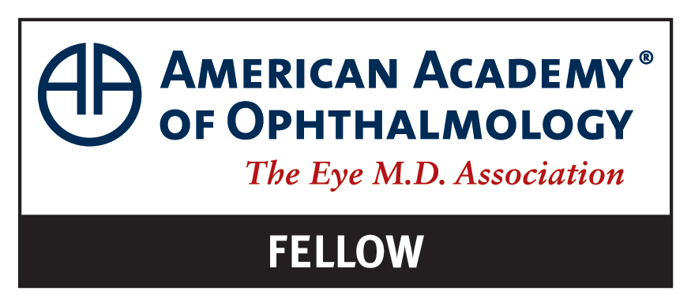

Steven A. Boskovich, M.D.
F.A.C.S. • F.A.S.R.S.

Education
- M.D. — University of Michigan Medical School
- B.S. — University of Michigan, College of L.S.A., Honors Program
Training
- VitreoRetinal Surgery Fellowship — Cleveland Clinic Foundation
- Ophthalmology Residency — University of Michigan
- Internal Medicine Internship — Northwestern University McGaw Medical Center
Board Certifications & Fellowships
- Diplomate — American Board of Ophthalmology (1992, 2002, 2012, 2022)
- Fellow — American Academy of Ophthalmology
- Fellow — American College of Surgeons
- Fellow — American Society of Retina Specialists
- Diplomate — National Board of Medical Examiners
Professional Memberships
- Member — American Medical Association
- Member — Michigan State Medical Society
- Member — Genesee County Medical Society
- Member — Michigan Society of Eye Physicians and Surgeons
- Ophthalmological Associate — Research to Prevent Blindness
Hospital Staff Memberships
- The Surgery Center (Genesee Care)
- McLaren Flint Region Medical Center
- Ascension Genesys Hospital
- Hurley Medical Center
Professional Organizations



Board Certification Verification
Dr. Boskovich is a verified Diplomate of the American Board of Ophthalmology.
What is a Retina Specialist?
Learn about the extensive training and subspecialization that defines a vitreoretinal surgeon.
Learn More